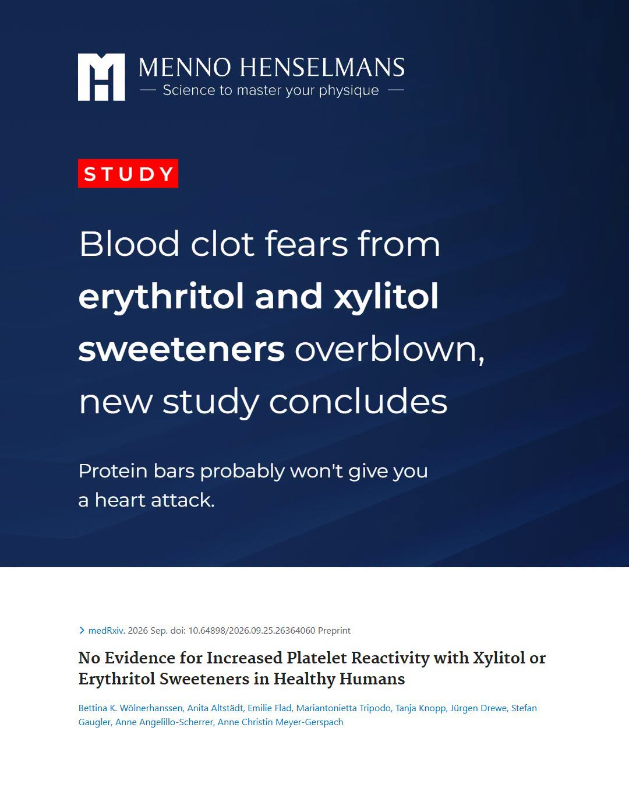

Erythritol and xylitol heart risk is unclear; the Cleveland Clinic studies were limited
Louis notes it is unclear whether sugar alcohols raise CVD risk. A shared post explains that the group linking higher blood erythritol and xylitol to more heart attacks and strokes also showed that 30 g doses made platelets more reactive, but both studies had serious problems, including that the association study did not measure intake.